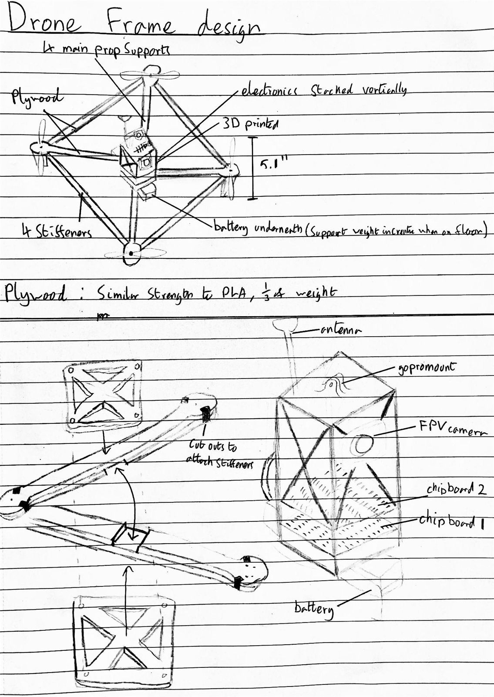
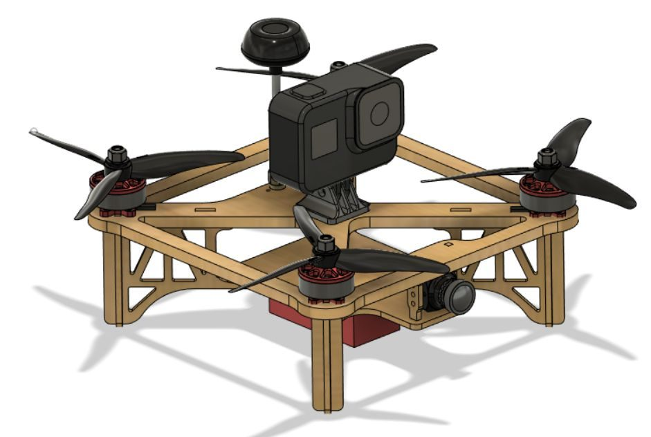
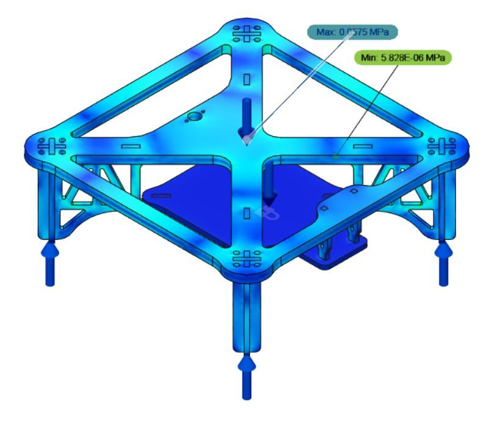
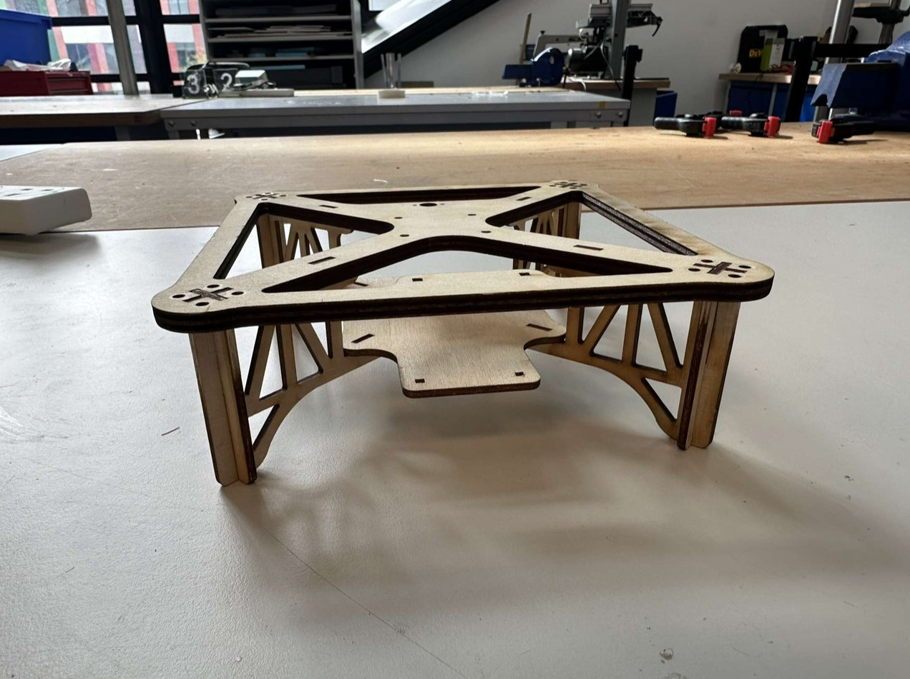
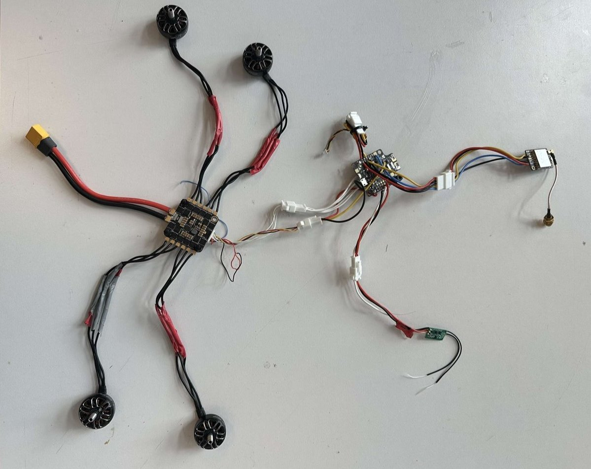

The brief
The client, AeroMAP (the module's simulated client), wanted its RVID02 inspection drone optimised for flight duration and performance. The key requirements were:
- a lighter frame without losing strength
- less 3D-printing time
- the best propeller and battery for the existing motors
- a sustainable design
Hard limits: under 400 g without battery, within 300 mm, at least 7 minutes of flight while carrying a GoPro, and FPV flight with failsafe motor cut-off.
My role: Performance Lead
- Battery and propeller selection (with the Propulsion Lead): set the selection criteria at concept stage, then made the final choices.
- Aerodynamics study for the assessment and demonstration gate review.
- Risk register: wrote the project risk register, covering 15 risks with owners and mitigations.
- Testing phase: part of the flight-test team.
Airframe: light, strong and quick to make
- Plywood over plastic: plywood has a higher specific strength than the PLA or acrylic on offer, and it's more sustainable. The frame is laser-cut, so only the GoPro mount is 3D-printed (about 1 hour 8 minutes of printing).
- Iterated for strength: the first frame used 14 pieces with grain aligned to each load, but relied on glued joints. We replaced it with a single 6 mm plate with straight arms and filleted corners to spread stress.
- Checked with FEA: static stress at steady flight (50% thrust) and at maximum upward acceleration (100% thrust), which roughly doubled the stress, as predicted.
- Designed for integration: a removable electronics plate with 24% more usable area than the previous drone, and a rotatable camera mount.





Battery selection
We compared four LiPo options on the existing motors. Because the plywood frame was so light, the smallest battery still gave a large thrust margin, so we chose the GNB 850 mAh 3S. It kept the all-up mass to 0.45 kg and gave a 5.4 : 1 thrust-to-weight ratio at only 50% throttle.
| Battery (3S) | Battery mass | All-up mass | Thrust-to-weight (full throttle) |
|---|---|---|---|
| 850 mAh (chosen) | 78 g | 0.450 kg | 14.2 |
| 1300 mAh | 113 g | 0.485 kg | 13.1 |
| 1550 mAh | 140 g | 0.512 kg | 12.4 |
| 2200 mAh | 185 g | 0.557 kg | 11.4 |
Propeller selection
The drone films inspection targets, so stable, efficient flight mattered more than raw thrust. We scored five propeller types for suitability and efficiency. Two tied, so we broke the tie on the mission and chose the low-pitch (~3″) tri-blade for stability during filming. At 5.1″, it is slightly longer than the bi-blade, which closes most of the efficiency gap, while keeping plenty of thrust.
| Propeller | Suitability | Efficiency | Total |
|---|---|---|---|
| Low pitch (~3″) tri-blade (chosen) | 3 | 5 | 8 |
| Bi-blade (~5″ pitch) | 4 | 4 | 8 |
| Medium pitch (~4″) tri-blade | 4 | 3 | 7 |
| High pitch (~5″) tri-blade | 3 | 2 | 5 |
| Quad-blade (~4.5″ pitch) | 2 | 2 | 4 |
What I'd take into my next project
- Mass savings compound. A lighter frame allowed a smaller battery, which made the drone lighter again.
- Design for the manufacturing process. Switching the frame from 3D printing to laser-cut plywood cut print time to about an hour.